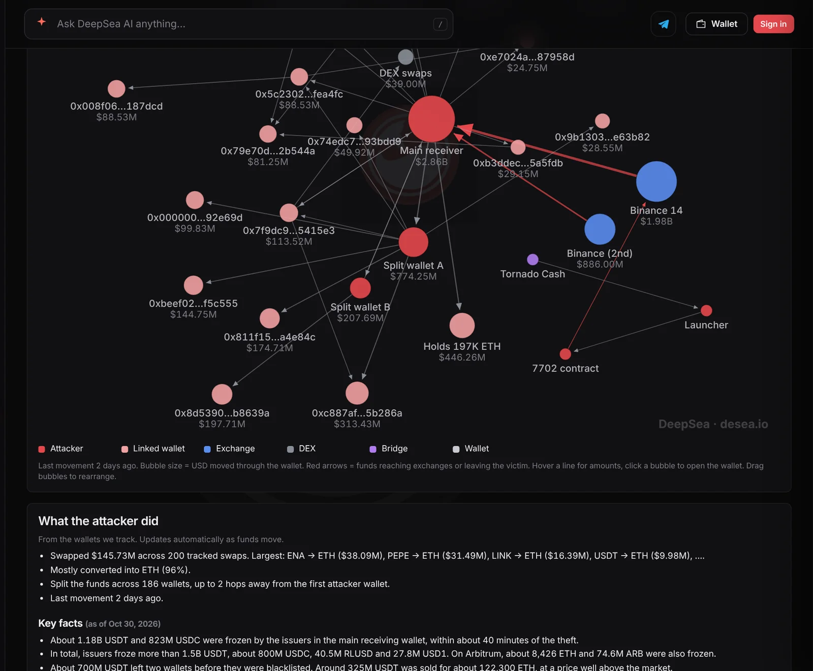

Rumor vs record: did hackers pay $15 to drain $2.5 billion from Binance in 20 minutes?
Headlines about the Binance hack keep spreading. We checked the most shared claims against Binance's own report, DeepSea's hack tracker and CoinGecko prices. The single-transaction part holds up. The "$15" and "20 minutes" framing misses the story.
Key points
- True: one Ethereum transaction emptied Binance's main hot wallet. DeepSea values that wallet's flow to the attacker at $1.98 billion, below the $2.5 billion in the viral headline.
- Misleading: the big transfers took minutes, but Binance says the campaign was built over months and the attacker was inside its systems for hours first.
- Unverified: "$3.1 billion still in linked wallets." The ETH and BTC that TRM Labs says the attacker still holds are worth about $2.33 billion at CoinGecko prices on November 7.
Rumor vs record
| What is going around | Verdict | What the record shows |
|---|---|---|
| "Hackers paid $15 to drain $2.5 billion from Binance in one hit." | Partly true | DeepSea's hack page says the Binance 14 hot wallet on Ethereum was emptied in a single transaction, and puts that wallet's flow to the attacker at $1.98 billion, not $2.5 billion. We could not open a block explorer to check the $15 fee, and the fee was not the real cost of an attack that took months to prepare. Source |
| "The whole hack was pulled off in 20 minutes." | Misleading | Binance's report says the hot-wallet transfers began at 4:05 p.m. ET on October 29, and the Ethereum sweep followed minutes later. But the same report says the attacker was on an engineer's computer from 1:15 p.m. ET, the malware came months earlier through a fake job interview, and the last attacker delegation was only cleared at 8:10 p.m. ET that evening. Source |
| "$3.1 billion is still sitting in wallets linked to the hackers." | Unverified | TRM Labs, an on-chain analytics firm, counts more than 420,000 ETH and 18,270 BTC still in attacker hands and out of issuers' reach. At CoinGecko prices at 6:45 a.m. ET on November 7, that is about $2.33 billion. Adding the about $2.4 billion of USDT and USDC that DeepSea counts as frozen gives a much larger number. We could not reproduce $3.1 billion. Source |
| "Binance customers will eat the loss." | Wrong | Binance says it will absorb the loss with company funds, not users, and that 98% of the affected token assets had been replaced by October 31. Source |
| "North Korea was behind it." | True | The FBI attributed the theft to North Korea and calls the activity "TraderTraitor." Binance's report cites the FBI's finding. Source |
| "It all started with a fake job interview." | True | Binance's report says an engineer was lured by a fake recruiter, and a coding "assignment" installed malware that hid inside the developer tool pyenv. Source |
 What DeepSea's data shows
What DeepSea's data shows
DeepSea's Binance hack page tracks the Ethereum side of the theft, which it puts at $3.40 billion. Its money-flow map shows the main receiving wallet took in $2.86 billion: $1.98 billion from the hot wallet labeled Binance 14, emptied in a single transaction, and $886 million from a second Binance wallet.
Since then, the attacker has split funds across 186 wallets and made 200 tracked swaps worth $145.73 million, 96% of them into ETH. The largest were ENA, PEPE and LINK sold for ETH. One holding wallet keeps about 197,000 ETH. The last tracked movement was two days before our check. Binance's $6.34 billion total is larger because it also counts XRP, SOL, OP and BTC taken on other chains.
We checked DeepSea alongside CoinGecko prices. Block explorers could not be reached from our tools this morning.

Data: DeepSea (desea.io), checked November 7, 2026, 6:44 a.m. ET.
Why we did this check
A widely shared headline this week claimed hackers paid $15 to drain $2.5 billion from Binance in one hit. Others said the theft took 20 minutes, or that $3.1 billion still sits with the attackers. Each line has some truth in it, and each leaves something out.
We went to Binance's incident report of November 3, the FBI's attribution, TRM Labs' analysis, DeepSea's tracker and CoinGecko prices. We did not use other news articles.
Why "$15" is the wrong takeaway
Sending a transaction on Ethereum is cheap, so one big transfer can cost very little in fees. That part is not news. The real work came before it. Binance says the attacker used EIP-7702, a feature that lets a wallet hand some control to a smart contract, and sent 50 signing transactions that set up permissions which kept working even after Binance paused withdrawals.
TRM Labs says the sweep took about 167,464 ETH and 1.615 billion USDT, among 63 tokens. At CoinGecko's ETH price at the start of October 29 ($2,357), ETH and USDT alone come to about $2.0 billion. That fits DeepSea's $1.98 billion better than the $2.5 billion in the headline.
What we will watch
Moves from the wallet holding about 197,000 ETH, any attacker deposits at exchanges, and Binance's promised review by outside security firms. Our earlier stories cover the theft and Binance's report.
LC Insight analysis
This section is our reading of the facts above, not a statement of fact.
- We think the "$15" headline spreads because it is a striking contrast, but it teaches the wrong lesson. The cheap part was the last step; the expensive part was months of social engineering against people, not code.
- Totals for "money still with the hackers" swing by billions depending on prices and on whether frozen stablecoins are counted. Any post that gives one number without saying how it was counted is worth reading with care.
- For Binance users, the claim that matters most is settled: Binance says it is covering the loss with company funds, and 98% of the affected token assets were replaced by October 31.
What's next
- Moves from the attacker's main ETH holding wallet
- Attacker deposits reaching exchanges
- Results of Binance's outside security review
Disclaimer. This article is based on public information and the sources listed below as of the update time shown. It is for information only and is not investment, legal or tax advice. Figures may change as companies and authorities publish new data.
Sources
- Binance on X, "29 October Binance Security Incident: Initial Findings and Response Update" (November 3, 2026)
- FBI Cyber Branch on X, TraderTraitor attribution (October 31, 2026)
- DeepSea, Binance hack tracker (read November 7, 2026, 6:44 a.m. ET)
- TRM Labs, on-chain analysis of the Binance theft (October 29, 2026)
- CoinGecko, Ethereum (ETH) price on October 29, 2026, and on November 7, 2026, 6:45 a.m. ET
- CoinGecko, Bitcoin (BTC) price (November 7, 2026, 6:45 a.m. ET)